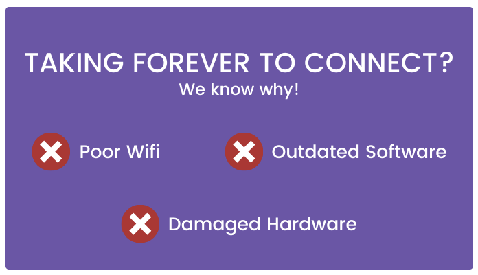

Working remotely can have its pros and cons.
As much as we love working at our own pace, a poor internet connection or an outdated system can get frustrating.
What happens when you are attending an important meeting over a face-time app and lose your internet connection? Or your voice is not clear enough for people to understand due to poor network issues?
You feel embarrassed and can miss out on a major discussion, right?
In such a state, installing a competent wi-fi router will surely do the trick.
Good internet connectivity is the ultimate tool for remote workers. However, in order to acquire an affordable network, it’s better to do proper research on the specifications, speed and price before making a decision.
The rules are pretty simple:
The same applies to a good working system which is a prerequisite to improve your working capacity. If your machine breaks off and starts disrupting your work every now and then, it can break the momentum.
Thus, not having a fine working device poses a big challenge to the smooth functioning of your work.
See? It’s not that tough now, is it? Just a minute study on the quality of the technology that you use at home.
Quality is the pride of workmanship.
~W. Edwards Deming